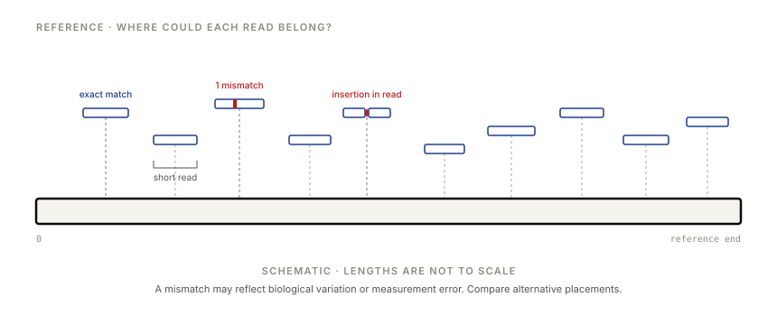
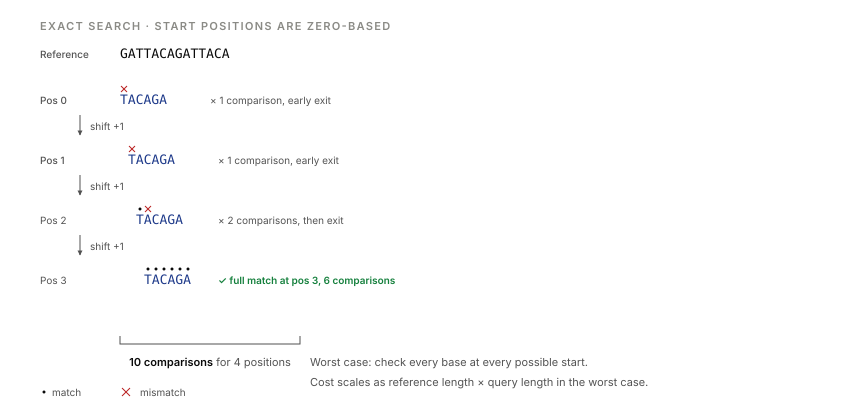
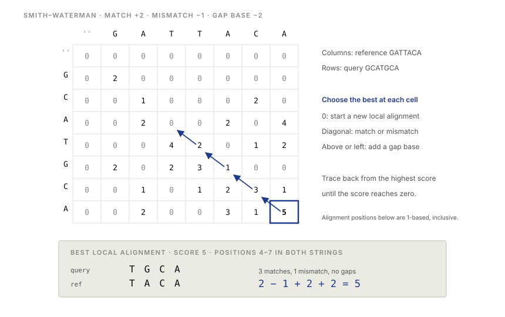
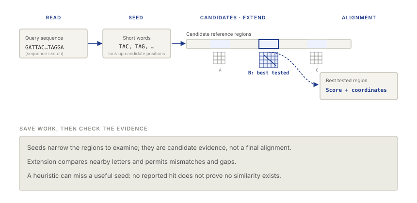
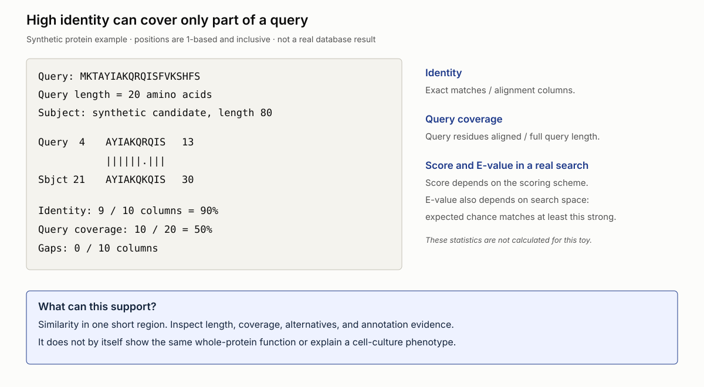
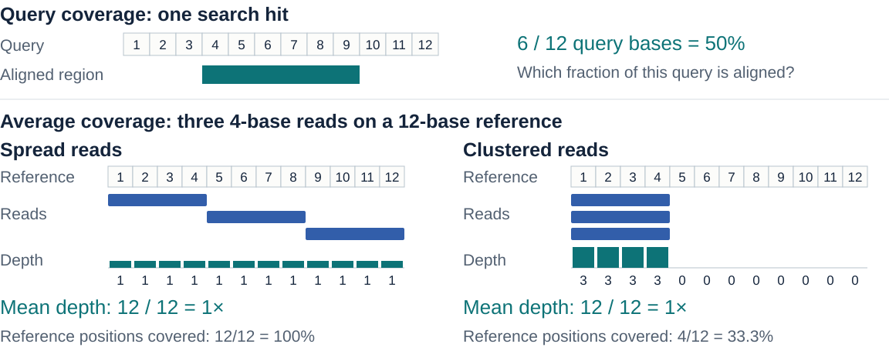
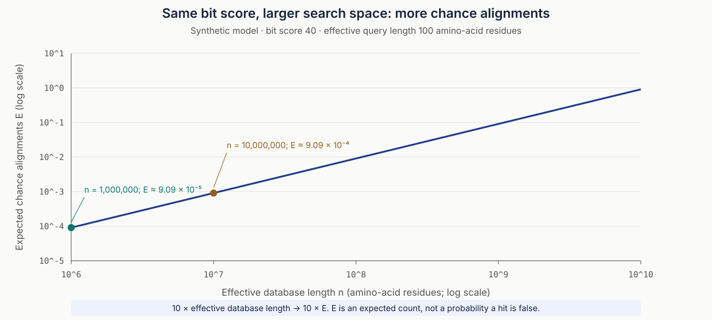

Sequence alignment
and search
Locate reads and compare sequences
Week 02
Bioinformatics for Engineers · 2026/2027
Locate reads and compare sequences
Week 02
Homework bridge
Last week:
How confident are these letters?
This week:
Where could this string belong?
The next link in the analysis

Placing it requires comparison with a reference or other sequences.
Placing it requires comparison with a reference or other sequences.
Exact matches
How many exact matches can you find?
Start positions 0 and 12. The string alone does not choose between them.
A simple algorithm

Keep every start where all query letters agree.
Keep every start where all query letters agree.
Stepwise scan
Move the query one position.
Compare letters until a mismatch or a complete match.
What stops after the first mismatch?
Reject this candidate start, then continue scanning. Keep every exact-hit start.
Repeats and context
Does this query have the same placement ambiguity?
One exact start: 3. Additional sequence context can help distinguish locations.
Strand orientation
Query
TCATGGReverse complement
CCATGAThe reverse complement matches at reference start 3.
What happens if your program searches only one orientation?
Beyond exact matching
No exact match. Does that end the investigation?
A mismatch can reflect measurement error or a real sequence difference.
A model of similarity
Match
+2Mismatch
−1Gap base
−2Add the contributions across alignment columns.
Our teaching rule uses a linear gap penalty.
A gap example
Three matches and one gap. What is the score?
3 × 2 − 2 = 4
Comparing alternatives
How does this alignment compare with ACGT / A−GT?
2 − 1 − 1 − 2 = −2
A short experiment
A score depends on
both the alignment
and the scoring rule.
Predict a winner, then compare candidates in the lab.
Count which columns gain or lose points when you change the gap cost.
Two alignment objectives
Global
Align both sequences
from end to end.
Local
Find a high-scoring
region within them.
Which objective fits the question you want to ask?
Shared worked example
TTACGTAA
GGACGTCCACGT
ACGTMatch +2, mismatch −1, gap base −2
What happens to the flanking letters in the local result?
Alignment boundaries
Reference TTACGTAA Read ACGT
Use both sequences fully.
Penalize end gaps.
Choose a region of each.
Read ends may be omitted.
Use the whole read.
Leave reference flanks free.
Which objective fits a complete read within a longer reference?
Dynamic programming
Keep the best score for the subproblem. Local alignment can also restart at zero.
A global table by hand
D[i][j] = best score for reference[:i] against read[:j].
| D | ∅ | A | G |
|---|---|---|---|
| ∅ | 0 | −2 | −4 |
| A | −2 | 2 | 0 |
| C | −4 | 0 | 1 |
Match +2 · mismatch −1 · gap −2
What belongs in D[2][2]?
↖ Pair C / G: 2 − 1 = 1
↑ Pair C / −: 0 − 2 = −2
← Pair − / G: 0 − 2 = −2
Keep the maximum: 1.
∅ means an empty prefix. Each boundary step adds one gap: 0, −2, −4.
One cell, then a traceback

Start at a maximum-scoring cell and trace back to zero.
Start at a maximum-scoring cell and trace back to zero.
Fill-and-trace experiment
Each cell records a best score.
Traceback recovers the aligned letters.
Why does a local traceback stop at zero?
Zero marks a restart of the local alignment score.
A short alignment experiment
Different alignment paths
can receive the same score.
Which choices did the traceback make?
A tied score leaves the choice of alignment unresolved by this rule.
A larger search space
Mapping
Where could a read fit
in a chosen reference?
Search
Which database sequences
contain similar regions?
How does the output you need change?
The cost of a full table
Hypothetical comparison: one 150-base read, full pairwise DP.
150 × 3,000,000,000
450 billion
interior cells
150 × 300
45,000
interior cells
Find seeds → select candidate windows → align within windows
Finding candidates also costs work. Several windows may need alignment.
Candidate discovery

Extension evaluates a longer alignment around the candidate.
Extension evaluates a longer alignment around the candidate.
The cost of filtering
Six matches, two mismatches. Is there an exact four-letter seed?
No shared exact 4-mer. This full aligned pair still scores 10 under +2/−1.
This activity uses exact DNA words to filter candidates.
Reading a report

Compare identity with query coverage before reading the annotation.
Compare identity with query coverage before reading the annotation.
Interpreting search statistics
Two meanings of coverage

Search-space experiment

The model expects more chance alignments in the larger search space.
The model expects more chance alignments in the larger search space.
Returning to the biological question
Sequence similarity can support
an inference of common ancestry.
Homology means common ancestry.
Check whether the matched region supports the proposed function.
What would you check before transferring a function label?
Exit discussion
Homework handoff
Find every exact location.
Score an alignment.
Complete a scaffolded global-alignment table.
Open in Colab, save a copy, and run setup.
If the GitHub copy is unavailable, download and upload the notebook.